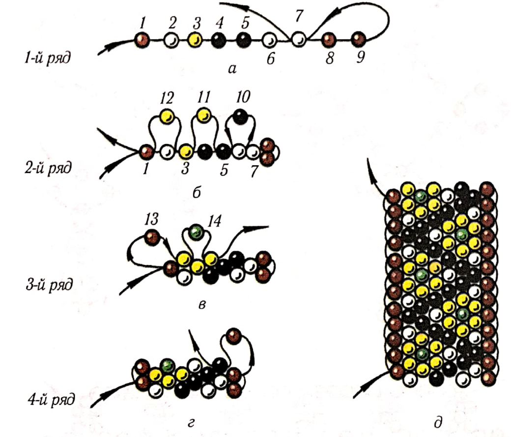
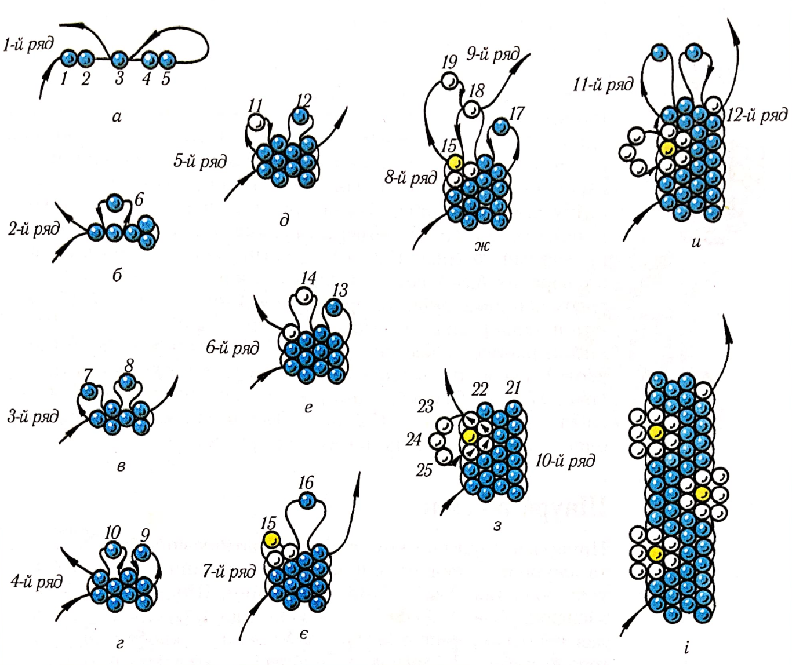

ЛАБОРАТОРНО-ПРАКТИЧНА РОБОТА
Тема: «Мозаїчні вироби»
Мета: засвоєння техніки мозаїчного нанизування, виховувати естетичний смак повагу та любов до традицій українського народу.
Матеріали та інструменти: бісер різного розміру та кольору, капронові нитки, голки для бісеру.
Порядок виконання роботи:
- Ознайомитись з теоретичними відомостями роботи.
- Виконати завдання практичної роботи.
Теоретичні відомості:
Способом мозаїка-нанизування бісеринок у шаховому порядку (через одну) – виготовляли різноманітні пласкі й круглі вироби. Таким способом можна виготовити ланцюжок на шию і ґердан, браслет і пояс, бретелі до сарафана. Мозаїчні вироби нанизують на одній нитці, зліва направо і справа наліво.
Практична робота
Виконати вправи:
1. Ланцюжок мозаїка(мал. 23): навощити нитку, набирають на неї непарну кількість бісеринок для першого ряду, наприклад дев’ять 1-9 (кількість бісеринок у ряду залежить від ширини виробу). Починають другий ряд, протягнувши нитку крізь бісеринку 7 – третю від кінця (мал. 23, а). Притягують нитку і набирають другий ряд із трьох бісеринок 10-12, протягуючи голку з ниткою справа наліво крізь бісеринки-зв’язки 5,3,1 першого ряду (мал. 23, б).У такій самій послідовності нанизують третій, четвертий (мал. 23, в, г)та всі наступні ряди (мал. 23, д).Ланцюжок може бути однобарвним та з узором.

Мал. 23. Ланцюжок мозаїка.
2. Ланцюжок ромашка(мал. 24) виготовляють трохи інакше, тому треба стежити за нанизуванням квіточок, які прикрашають його краї. Для першого ряду набирають п’ять кольорових бісеринок 1-5 (блакитних, зелених, червоних тощо) і протягують нитку у третю від кінця бісеринку (мал. 24, а).Притягують нитку і закінчують другий ряд однією бісеринкою 6,протягуючи нитку крізь бісеринку 1 першого ряду (мал. 24, б).Третій ряд нанизують зліва направо з двох кольорових бісеринок 7, 8, протягуючи нитку крізь бісеринки-зв’язки 6,5 другого ряду (мал.24, в).Четвертий ряд нижуть справа наліво з двох кольорових бісеринок 9, 10,протягуючи нитку крізь бісеринки-зв’язки 8, 7 третього ряду (мал. 24, г).П’ятий ряд нанизують зліва направо, починають бісеринкою-пелюсткою 11 майбутньої квіточки білого кольору і однією кольоровою 12 (мал. 24, д). Притягують нитку і набирають шостий ряд. Нанизують його справа наліво однією кольоровою 13 і другою бісеринкою-пелюсткою 14 білого кольору, протягуючи нитку крізь бісеринки попереднього ряду (мал. 24, е).Сьомий ряд починають кольоровою (жовтою) бісеринкою 15 для серединки квіточки і закінчують однією бісеринкою іншого кольору 16 (мал. 24, є).Восьмий ряд нижуть справа наліво з однієї кольорової бісеринки 17 і однієї білої 18 для третьої пелюстки квіточки, протягуючи нитку крізь бісеринки сьомого ряду. Дев’ятий ряд набирають із білої бісеринки 19 четвертої пелюстки квіточки та однієї кольорової 20(мал. 24, ж).Десятий ряд набирають із двох кольорових бісеринок 21 і 22 та закінчують петелькою з трьох або двох білих бісеринок-пелюсток 23-25. Закріплюють петельку, протягуючи робочу нитку знизу вгору крізь нанизані раніше пелюстки квіточки, і виводять у верхню (четверту) пелюстку. Закінчують квіточку, притягуючи нитку (мал. 24, з).Продовжують роботу, нанизуючи квіточки то зліва, то справа (мал. 24, u, і).Такий ланцюжок прикрасить одяг, шию, його можна носити як браслет.

Мал. 24. Ланцюжок ромашка.
Контрольні питання:
- В чому полягає особливість нанизування способом мозаїка?
- Яку кількість бісеринок набираю